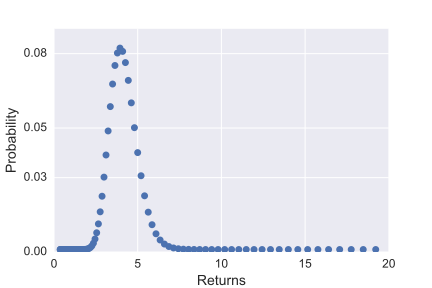
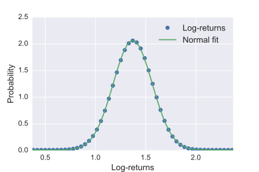

From one-step to multi-step model
The binomial option pricing model is simple approximation to the LogNormal approximation of returns which, when refined, converges to the analytic pricing formula for "vanilla options" (such as the European call).
The interest in covering it is that the binomial model is simple and useful for any kind of payoff including, as we will show, when early exercise is allowed (such as for an American option).
Recombining binomial tree
When covering arbitrage-free pricing, we had introduced a simple one-step model for the evolution of the price of an asset over one period of time which had the following form:
which may seem a bit unrealistic since it models possible prices after a period of time as taking one out of only two values. A simple extension of this model is therefore to make it multi-step, i.e.: repeat the branching over the same period of time.
Below, a two-step model is represented, the extension to \(N\) steps should then be clear:
The resulting structure is called a recombining binomial tree. The word recombining refers to the fact that the probability of going up or down at one node is independent of the node considered. This means that going "up" at one node then "down" at the next node will bring you to the same point as going down first then up. A recombining tree is simple to parametrize and it also avoids and exponential growth in the number of nodes which happens in a "bushy" tree:

As you can see, in the bushy tree, going up-then-down or down-then-up leads to two different states. A consequence of this is that the number of nodes grows exponentially with the number of steps considered.
Convergence to the LogNormal distribution
The probability of reaching a specific node (specific asset price) as the number of steps grows can be shown to converge (exactly) to a LogNormal distribution. To verify this, observe first that the factor in front of the probability of reaching each node is equal to the number of paths leading to that node. On the illustration above, for example, there are two paths leading to the final middle node (up-down and down-up) whence the \(2pq\). It is easy to check by induction that the number of paths is given by the rows of Pascal’s triangle (binomial coefficients):
Explicitly, the probability to get to the \(k\)th node at the \(N\)th step is given by
where the first term is the \(N\)-choose-\(k\) function (also sometimes written \(C^N_k\)) returning the \(k\)th entry of the \(N\)th row of the Pascal’s triangle and is given explicitly by
where \(N!=N(N-1)\dots 1\). This function is implemented in scipy.misc.comb. Let’s for example compute the number of paths leading to the end nodes of a 4-step model:
# note: there are N+1 final nodes when considering N steps
nPaths = lambda N: [comb(N,k) for k in range(0,N+1)]
print(nPaths(4))You now have a direct way of computing the probability of reaching the \(k\)th node at the \(N\)th step, and you can also observe that the return at that node is given by
For example you can verify (both by drawing the tree and using the formulas) that in a 3-step model this gives:
where, as usual, \(q=(1-p)\).
Let’s now check the claim of convergence to a LogNormal distribution now that you know how to compute the returns and the corresponding probabilities for an arbitrary number of steps (do try setting the number of steps to other numbers like \(N=3,5,10,50\)).
endProbas = lambda p,N: [comb(N,k)*(p**k)*(1-p)**(N-k) for k in range(0,N+1)]
endReturns = lambda u,d,N: [(u**k)*(d)**(N-k) for k in range(0,N+1)]
# enter some arbitrary values
p = 0.6 # probability of going up
u = 1.03 # multiplicative "up factor"
d = 0.99 # multiplicative "down factor"
# number of steps (play with this number)
N = 100
returns = endReturns(u,d,N)
probas = endProbas(p,N)
# display pdf
s = Scatter(x=returns,y=probas, mode='markers')
layout = Layout(
xaxis = dict(title = "Returns"),
yaxis = dict(title = "Probability"),
width = 700,
)
fig = dict(data=[s],layout=layout)
iplot(fig)This leads to the following figure where you may recognise the shape of a LogNormal distribution:

You can show this link more clearly by looking at the log-returns which converge to a Normal distribution: if you are interested in computing the mean and variance of the normal distribution to which the log-returns converge, see appendix XXXXX
from numpy import trapz
logreturns = np.log(returns)
# the theory gives us the mean and variance
# at the limit when N goes to infinity
# the last line is to "normalize" so that the curves and
# the points are on the same scale
# (you can safely ignore all this)
th_mean = N*(p*np.log(u)+(1-p)*np.log(d))
th_var = N*p*(1-p)*np.log(d/u)**2
pr_norm = probas / abs(trapz(logreturns,probas))
# show the possible log-returns with their weights
s = Scatter(x=logreturns,y=pr_norm, mode='markers',name="Log returns")
# show the normal distribution with the theoretical mean and variance
# computed above
xx = np.linspace(np.min(logreturns),np.max(logreturns),100)
yy = norm.pdf(xx,th_mean,np.sqrt(th_var))
s2 = Scatter(x=xx,y=yy,name="Normal fit")
#
layout = Layout(
xaxis = dict(title = "Log-Returns"),
yaxis = dict(title = "Probability"),
width = 700,
)
fig = dict(data=[s,s2],layout=layout)
iplot(fig)
You will see soon how to calibrate the parameters of the binomial tree in order to recover precisely the same LogNormal model you have already encountered. But before doing that, let’s look at how to use a binomial tree in order to price a derivative which will lead more naturally to the model calibration.
Pricing with a binomial tree
Risk-neutral probability in a tree
The only probability we need to consider in the tree when pricing is the risk-neutral probability \(p^\star\). In order to obtain it, remember first that, in the risk-neutral world, the price must obey
If we model the evolution of the price of an asset over a time \(\tau\) with a tree with \(N\) steps then each branching corresponds to a time span \(\tau/N\) which we denote \(\Delta t\). And the above relation must, in particular, be verified over the first branching or:
Solving for \(p^{\star}\) and using the usual form for the computation of interests, you get that
is the risk-neutral probability of going "up" in a binomial tree.
In the rest of this section, we will show how to price with a binomial tree assuming \(u,d\) are given and show, later, how they can be set in a way that makes these prices agree with the LogNormal model.
European type derivative
Consider a binomial tree modelling the evolution of the price of an asset over a time \(\tau\) with \(N\) steps. Assume \(u\) and \(d\) are given (you will see how to calibrate those at the next point). Pricing any derivative depending upon that asset is rather simple:
-
follow the tree forwards to compute the intrinsic value of the derivative at each one of the final nodes (corresponding to time \(T\))
-
follow the tree backwards to price the derivative at every nodes using the risk-neutral probability and discounting (i.e., using arbitrage-free pricing).
If you follow this process back until the root node, you get a single value which is the arbitrage-free price of the derivative at the initial time \(t\). It’s best to see this in action and to code it!
Here is some naive code reproducing the results above. Can you generalise it to an arbitrary number of steps?
# EUROPEAN CALL
S0 = 100
K = 99
u = 1.02
d = 0.99
# Go forward in the tree for two steps:
S_step1 = S0*np.array([d,u])
S_step2 = S0*np.array([d**2,u*d,u**2])
# Compute risk-neutral probability (r=0)
p_star = (1-d)/(u-d)
# Go backward in the tree with a call
C_step2 = np.array([max(S_step2[i]-K,0.) for i in range(0,3)])
C_step1 = np.array([ p_star*C_step2[1] + (1-p_star)*C_step2[0],
p_star*C_step2[2] + (1-p_star)*C_step2[1]])
C_step0 = p_star*C_step1[1] + (1-p_star)*C_step1[0]
for step in ("Forward", S0, S_step1, S_step2,
"Backward",C_step2, C_step1, C_step0):
print(step)Calibration
The tree model simplifies the evolution of the market by looking at a finite number of possible prices for the asset and assigning probabilities for each of those. The range of values is governed by the number of steps and the up and down multiplicative factors \(u\) and \(d\).
These two values must be set in such a way that the tree converges to the same LogNormal model than the one observed empirically, in the risk-neutral world. In that world, we don’t care about the mean since it is already fixed by the risk-neutral pricing (here, via fixing \(p^\star\)), so we just have to match the variance parameter \(\sigma^2\). Remember you had seen that the returns could be modelled with a LogNormal distribution with a variance growing linearly with the time span considered. It can be shown that if
and \(d=1/u\), the binomial tree converges to a LogNormal distribution with the same variance as the one observed. Note that in this parametrisation, there is effectively only one degree of freedom to consider.
If you are interested in the proof, see appendix XXXX, it is not hard but requires a fairly good grasp of basic tools from probability theory.
Dealing with early-exercise
When considering derivatives with early exercise, the principle is very much the same with a slight twist:
-
follow the tree forwards to compute the intrinsic value of the derivative at each one of the final nodes (write this \(V_{node}^{intr}\))
-
follow the tree backwards and at each node:
-
compute the value of the derivative using arbitrage-free pricing as in the binomial tree (call this \(V_{node}^{af}\))
-
the value kept at the node is \(\max(V_{node}^{af},V_{node}^{intr})\) (i.e., \(V_{node}^{af}\) if it is not in your advantage to exercise early, \(V_{node}^{intr}\) if it is).
-
Let’s try below with an American put with 2-steps. Coding it is left as an exercise. Note that we introduce an interest rate here in this example (only if \(r>0\) can it be in your advantage to exercise early, cf. the bonus section in the module on derivatives for more information).
Computing greeks in a binomial tree
Greeks can be approximated using the exposed values given by the binomial tree. For the Delta for example, you have only two pairs of values to consider:
-
the values the underlying can take over one time step, \(uS_0\) and \(dS_0\),
-
the values the derivative can take, \(V(uS_0)\) and \(V(dS_0)\).
Remembering that the Delta is given by \(\Delta = \partial V/\partial S \), you can approximate it as
And this approach can be used for the other greeks as well.
Summary and discussion
Gathering elements from the previous points you have seen that:
-
the binomial tree amounted to an approximate form of the LogNormal distribution over a finite set of values,
-
that pricing using a tree is simple and can be done at any intermediate time point allowing to price any derivatives directly (main reason for considering binomial pricing and extensions),
-
that setting \(u=\exp(\sigma\sqrt{\Delta t})\) and subsequently \(d=1/u\) makes the tree converge to the LogNormal model for the returns observed on data in the limit where the number of steps tends to infinity.
Ingredients needed for coding the binomial tree
Here we summarise the key elements needed to build a binomial tree (not all are necessary depending on how you implement it):
Term |
Mathematical expression |
Relevant python functions |
number of steps |
\(N\) |
|
time span, time per step |
\(\tau, \Delta t={\tau/N}\) |
|
up,down factors |
\(\exp(\pm\sigma\sqrt{\Delta t})\) |
|
probability of going up |
\(p=(\exp(-r\Delta t)-d)/(u-d)\) |
" |
probability to get to the \(k\)th node at \(N\)th step |
\(C^N_k p^k (1-p)^{N-k}\) |
|
price of the underlying at that node |
\(S_T(k)=u^k d^{N-k}\) |
|
with these formulas you can
-
go forwards and compute the intrinsic value of the derivative at each node for \(N\) steps,
-
go backwards and price the derivative at each node until the original price.